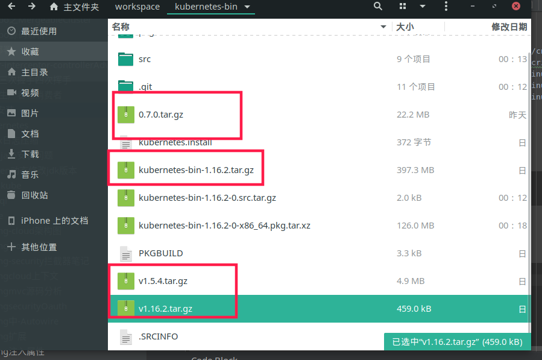

安装过程
1 | docker pull nginx; |
问题
- Error registering network: failed to acquire lease: node “kongkong” pod cidr not assigned
1
Kubeadm init，没有增加 --pod-network-cidr 10.244.0.0/16参数
- Unable to connect to the server: x509: certificate signed by unknown authority (possibly because of “crypto/rsa: verification error” while trying to verify candidate authority certificate “kubernetes”)
1
2
3
4
5kubeadm reset
rm -rf $HOME/.kube
mkdir -p $HOME/.kube
sudo cp -i /etc/kubernetes/admin.conf $HOME/.kube/config
sudo chown $(id -u):$(id -g) $HOME/.kube/config 安装
- kubelet.service
1
2
3
4
5
6
7
8
9
10
11
12[Unit]
Description=kubelet: The Kubernetes Node Agent
Documentation=http://kubernetes.io/docs/
[Service]
ExecStart=/opt/bin/kubelet
Restart=always
StartLimitInterval=0
RestartSec=10
[Install]
WantedBy=multi-user.target - 10-kubeadm.conf
1
2
3
4
5
6
7
8
9
10
11# Note: This dropin only works with kubeadm and kubelet v1.11+
[Service]
Environment="KUBELET_KUBECONFIG_ARGS=--bootstrap-kubeconfig=/etc/kubernetes/bootstrap-kubelet.conf --kubeconfig=/etc/kubernetes/kubelet.conf"
Environment="KUBELET_CONFIG_ARGS=--config=/var/lib/kubelet/config.yaml"
# This is a file that "kubeadm init" and "kubeadm join" generates at runtime, populating the KUBELET_KUBEADM_ARGS variable dynamically
EnvironmentFile=-/var/lib/kubelet/kubeadm-flags.env
# This is a file that the user can use for overrides of the kubelet args as a last resort. Preferably, the user should use
# the .NodeRegistration.KubeletExtraArgs object in the configuration files instead. KUBELET_EXTRA_ARGS should be sourced from this file.
EnvironmentFile=-/etc/default/kubelet
ExecStart=
ExecStart=/opt/bin/kubelet $KUBELET_KUBECONFIG_ARGS $KUBELET_CONFIG_ARGS $KUBELET_KUBEADM_ARGS $KUBELET_EXTRA_ARGS - 安装container linux
1
2
3
4
5
6
7
8
9
10
11
12
13
14mkdir -p /opt/cni/bin
mkdir -p /opt/bin
mkdir -p /etc/systemd/system/kubelet.service.d
https://github.com/containernetworking/plugins/releases/download/v0.8.2/cni-plugins-linux-amd64-v0.8.2.tgz
https://github.com/kubernetes-sigs/cri-tools/releases/download/v1.16.2/crictl-v1.16.2-linux-amd64.tar.gz
https://storage.googleapis.com/kubernetes-release/release/v1.16.2/bin/linux/amd64/kubeadm
https://storage.googleapis.com/kubernetes-release/release/v1.16.2/bin/linux/amd64/kubelet
https://storage.googleapis.com/kubernetes-release/release/v1.16.2/bin/linux/amd64/kubectl
chmod +x {kubeadm,kubelet,kubectl}
sudo cp ./kubelet.service /etc/systemd/system/
sudo cp ./10-kubeadm.conf /etc/systemd/system/kubelet.service.d/
cp {kubeadm,kubelet,kubectl} /opt/bin/
cp {kubeadm,kubelet,kubectl} /opt/bin/
systemctl enable --now kubeletarchlinux安装
1
2
3
4
5下载安装包
git clone https://aur.archlinux.org/kubernetes-bin.git
下载PKGBUILD中对应文件
执行
makepkg --install
安装kubernetes dashboard
- ca证书（https://kubernetes.io/docs/concepts/cluster-administration/certificates/）
1
2
3
4
5
6生成ca私钥
openssl genrsa -out ca.key 2048
证书自签名
openssl req -x509 -new -nodes -key ca.key -subj "/CN=192.168.188.130" -days 10000 -out ca.crt
显示证书内容
openssl x509 -in ca.crt -noout -text - dashboard证书
1
2
3
4
5
6
7
8
9
10
11
12
13
14
15
16
17
18
19
20
21
22
23
24
25
26
27
28
29
30
31
32
33
34
35
36
37
38
39
40
41
42
43
44生成私钥
openssl genrsa -out server.key 2048
配置文件csr.conf
[ req ]
default_bits = 2048
prompt = no
default_md = sha256
req_extensions = req_ext
distinguished_name = dn
[ dn ]
C = CN
ST = FJ
L = XM
O = system:masters
OU = system:masters
CN = 192.168.10.214
[ req_ext ]
subjectAltName = @alt_names
[ alt_names ]
DNS.1 = kubernetes
DNS.2 = kubernetes.default
DNS.3 = kubernetes.default.svc
DNS.4 = kubernetes.default.svc.cluster
DNS.5 = kubernetes.default.svc.cluster.local
IP.1 = 192.168.10.214
IP.2 = 192.168.10.214
[ v3_ext ]
authorityKeyIdentifier=keyid,issuer:always
basicConstraints=CA:FALSE
keyUsage=keyEncipherment,dataEncipherment
extendedKeyUsage=serverAuth,clientAuth
subjectAltName=@alt_names
证书签名
openssl req -new -key server.key -out server.csr -config csr.conf
签发证书
openssl x509 -req -in server.csr -CA ca.crt -CAkey ca.key \
-CAcreateserial -out server.crt -days 10000 \
-extensions v3_ext -extfile csr.conf
显示证书内容
openssl x509 -in server.crt -noout -text - 第一种创建kubernetes-dashboard（修改recommended.yaml）
1
2
3
4
5
6
7
8
9
10
11
12
13
14
15
16
17
18
19
20
21
22
23
24
25
26
27
28
29
30
31第一处：NodePort
kind: Service
apiVersion: v1
metadata:
labels:
k8s-app: kubernetes-dashboard
name: kubernetes-dashboard
namespace: kubernetes-dashboard
spec:
ports:
- port: 443
nodePort: 30443
targetPort: 8443
selector:
k8s-app: kubernetes-dashboard
type: NodePort
第二处：添加证书
containers:
- args:
- --tls-cert-file=./dashboard.crt
- --tls-key-file=./dashboard.key
第三处：修改挂载
- name: kubernetes-dashboard-certs
hostPath:
# directory location on host
path: /certs
# this field is optional
type: Directory
# secret:
# secretName: kubernetes-dashboard-certs
kubectl apply -f ./recommended.yaml - 第二种创建kubernetes-dashboard（创建证书，直接挂载）
1
2kubectl create secret generic kubernetes-dashboard-certs --from-file=$HOME/certs -n kubernetes-dashboard
kubectl apply -f ./recommended.yaml - 授权
1
kubectl create clusterrolebinding kuberenetes-dashboard1 --clusterrole=cluster-admin --serviceaccount=kubernetes-dashboard:kubernetes-dashboard
- 获取token
1
kubectl describe secrets $(kubectl get secrets -A |grep kubernetes-dashboard-token|awk '{print $2}') -n kubernetes-dashboard
安装监控Heapster
- 下载
1
2
3
4
5
6
7
8
9mkdir heapster && cd heapster
wget https://raw.githubusercontent.com/kubernetes/heapster/master/deploy/kube-config/influxdb/grafana.yaml
wget https://raw.githubusercontent.com/kubernetes/heapster/master/deploy/kube-config/influxdb/heapster.yaml
wget https://raw.githubusercontent.com/kubernetes/heapster/master/deploy/kube-config/influxdb/influxdb.yaml
wget https://raw.githubusercontent.com/kubernetes/heapster/master/deploy/kube-config/rbac/heapster-rbac.yaml
sed -i "s/k8s.gcr.io/registry.cn-hangzhou.aliyuncs.com\/google_containers/g" `grep "k8s.gcr.io" -rl ./`
sed -i "s/apiVersion: extensions\/v1beta1/apiVersion: apps\/v1/g" `grep "apiVersion: extensions\/v1beta1" -rl ./`
kubectl create -f ./安装istio
1
2
3
4
5
6
7
8
9
10
11istioctl manifest apply --set values.pilot.resources.requests.cpu=100m --set values.pilot.resources.requests.memory=256Mi --set values.gateways.istio-ingressgateway.type=NodePort --set values.mixer.telemetry.resources.requests.cpu=100m --set values.mixer.telemetry.resources.requests.memory=100Mi --set profile=default
查看路由
route -n
查看iptables
iptables -t nat -nvL
抓包
tcpdump tcp port 15029
进入容器
kubectl exec -it istio-pilot-7989874664-f5pvf sh -n istio-system
重启
kubectl get po istio-pilot-7989874664-vlz5q -n istio-system -oyaml|kubectl replace --force -f -监控博客
kubernetes监控方案–cAdvisor+Heapster+InfluxDB+Grafana
kubernetes监控终极方案-kube-promethues自动补全
1
https://kubernetes.io/docs/reference/kubectl/cheatsheet/?source=post_page---------------------------
问题
- Not enough data to create auth info structure.
1
2kubectl -n kube-system describe secret $(kubectl -n kube-system get secret | grep admin-user | awk '{print $1}')
将整个token添加到~/.kube/config的最后 - Deployment” in version “extensions/v1beta1”
1
2修改apiVersion
apiVersion: apps/v1 - k8s内存
1
2
3
4
5
6您可以使用以下后缀之一作为平均整数或定点整数表示内存：E，P，T，G，M，K。
您还可以使用两个字母的等效的幂数：Ei，Pi，Ti ，Gi，Mi，Ki。例如，以下代表大致相同的值：
128974848, 129e6, 129M, 123Mi
i表示（1Mi=1024x1024）, M表示（1M=1000x1000）（其它单位类推， 如Ki/K Gi/G） - k8s删除pod一直处于terminating状态
1
2
3kubectl get all -ns NS
kubectl delete pod [pod name] --force --grace-period=0 -n [namespace]
kubectl patch pvc PVC_NAME -p '{"metadata":{"finalizers": []}}' --type=merge参考链接
github kubernetes-dashboard
Kubernetes指南
k8s实践2:user和rbac绑定